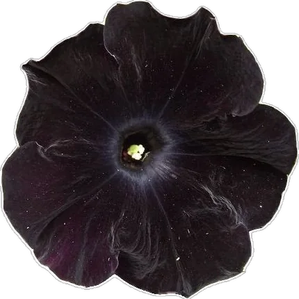
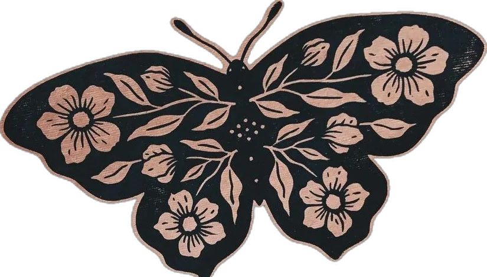

FILE_06 / BAKARY
Bakary
A recipe site that makes baking feel easy.
01Context
Bakary was a first-year team project with two friends, Faye and Soufyan. It is a Dutch recipe website for desserts and baked goods, live as Baka-Ry. It wants baking to feel accessible for everyone, from simple cupcakes to difficult macarons. You can browse recipes and add your own.
Again I was responsible for the designs and the logbook, which made me the person who knew what was decided and what the screens should look like.

02Research
We started by listing what the site had to do, then divided the work so everyone could build at the same time.
starting questions
- What does a bakery site need to show?

- How do three people share one design?

- What goes in the database?
- What does the logbook need to say?
03Build
Built as a team with HTML, CSS and JavaScript on the front end and a database behind it. My part was the design of the screens, the logbook and keeping the plan on track. The site has soft pink tones and a deer illustration.
- P-01Designsscreens and layout (mine)
- P-02Logbookdecisions and progress (mine)
- P-03Front endHTML, CSS, JavaScript
- P-04Databasestores the site data
04Result
A working website, finished as a team.
Quizzie and Bakary together were my first lesson in making a design and a team hold together.